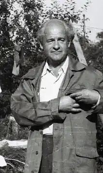

Віталій Іванович Петльований (З (16) грудня 1914, Вінниця — † 1989) — український радянський письменник.
Народився в м. Вінниця, в родині службовця. В 1921 р. родина переїхала до села Хорошеве Харківського району
Учасник Другої світової війни. Друкуватися почав 1935 року. Окремими виданнями вийшли збірки нарисів та оповідань "Бориславка" (1950), "Каховський репортаж" (1953) та ін.; повісті "Хотинці" (1949), "Кремлівський патруль" (1969), "Людина і хліб" (1971); романи "Сурми грають зорю" (1952), "Дівчина з передмістя" (1955), "Аміго" (1959), "Та це ж весна!" (кн. 1—2, 1962—65), "Сирена з мечем" (1972–1975), "Гуляй-гора" (1987). Головний герой творів Петльованого — радянський сучасник, людина високого обов'язку. Нагороджений орденом Вітчизняної війни 2-го ступеня, іншими орденами та медалями.